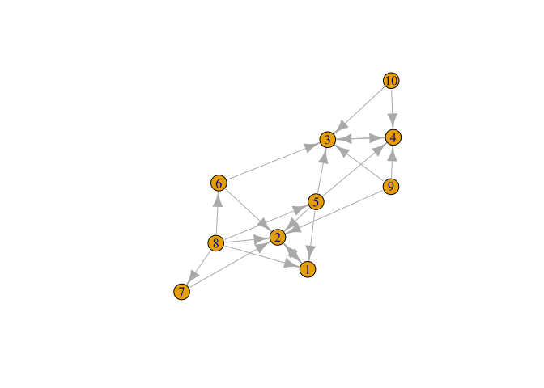
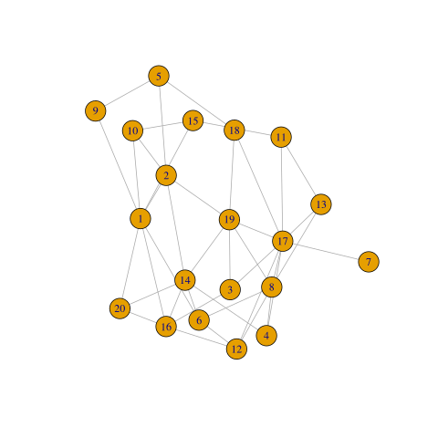

Data Sci Discover Project
Table of Contents
./resources/
1 Links
2 Proposal
2.1 Question
Can we determine the second eigenvalue from the method parameters? For PageRank, the second eigenvalue is equal to the smoothing parameter α
Yes. An open question for the Power Walk method is, can we determine the second eigenvalue from the method parameters? For PageRank, the second eigenvalue is equal to the smoothing parameter α. The second eigenvalue determines how long the algorithm takes to converge and how stable the solution is. To begin, implement the method for computing PageRank and then the Power Walk. It can all be done using sparse matrices, so it only requires a fraction of the memory and is each iteration is quick.
2.2 Working
Take the exemplar Graph from Figure 1:

Where we have the following:
\begin{align} \beta &= 10 \\ B &= \beta^A \\ A &= \begin{bmatrix} 0& 1& 0& 0 \\ 1& 0& 0& 0 \\ 0& 0& 0& 1 \\ 0& 0& 1& 0 \end{bmatrix} \\ \implies B &= \begin{bmatrix} 10 & 1 & 1 & 1 \\ 1 & 10 & 1 & 1 \\ 1 & 1 & 10 & 1 \\ 1 & 1 & 1 & 10 \\ \end{bmatrix} \\ \text{$D_B$ is a diagonal matrix of the column sums:}\\ D &= \begin{bmatrix} 13 & 0 & 0 & 0 \\ 0 & 13 & 0 & 0 \\ 0 & 0 & 13 & 0 \\ 0 & 0 & 0 & 13 \end{bmatrix} \\ \text{Hence the Inverse is:}\\ D_B^{-1}&= \frac{I}{13}\\ \text{Putting it all together:}\\ \Gamma &= I - n D^{- 1}_B \\ &= I - \frac{4 \cdot I}{13} \\ &= \frac{9}{13} \cdot I \\ &= \begin{bmatrix} \frac{9}{13} & 0 & 0 & 0 \\ 0 & \frac{9}{13} & 0 & 0 \\ 0 & 0 & \frac{9}{13} & 0 \\ 0 & 0 & 0 & \frac{9}{13} \end{bmatrix} \\ & \approx \begin{bmatrix} 0.6923 & 0 & 0 & 0 \\ 0 & 0.6923 & 0 & 0 \\ 0 & 0 & 0.6923 & 0 \\ 0 & 0 & 0 & 0.6923 \end{bmatrix} \end{align}3 Page Rank Methods
3.1 Introduction
These asses node centrality by performing a random walk across the graph and recording the frequencies of landing on a given vertex.
Usually Page Rank refers to the random surfer but I’m using it in this document to refer to any process that attributes a probability of landing on a vertex during a random walk to a graph that is not ergodic.
If each vertex is connected the graph is said to be ergodic and there is a closed solution for the limit values of the frequencies given this random walk:
- The eigenvalue equal to 1
- If the graph is not directed \(\vec{p}\) is a vector of length \(n\):
- \(n\) is the number of nodes in the graph \(G\)
- \(\vec{p}_{i} = \frac{\mathrm{deg}(v_{1})}{\mathrm{vol}(G)}\)
- \(\mathrm{vol}(G) = \sum^{n}_{i = 1} \left[ \mathrm{indeg}(v) \right] = \sum^{n}_{i = 1} \left[ \mathrm{outdeg}(v) \right ] = \sum^{n}_{i = 1} \left[ \mathrm{deg}(v) \right]\)
For large matrices calculating the eigenvalues will be expensive and so instead the power method is used, which is essentially looping over until the vector converges to a solution.
\begin{align} \vec{p} = \mathrm{T}\vec{p} \label{eq:pageRank-Method} \end{align}where:
- \(\mathrm{A}\)
- Is the adjacency Matrix, an element is 1 if movement from the row vertex to the column vertex is permitted.
- The matrix may be weighted in some way, for example 5 edges between vertices may be such that a 5 is used in the matrix not a 1
- An undirected graph will be such that \(\mathbf{A} = \mathbf{A}^{\mathrm{\mathbf{T}}}\)
- \(\mathrm{T}\)
- Is the transition probability matrix, an element in the matrix describes the probability of moving from the column-vertex to the row-vertex
- The transition matrix is intended to be such that for a given state distribution \(\vec{p}\), the next iteration of a random walk will be \(\mathrm{T}\vec{p}\)
- Observe also that \(\mathrm{T} = \mathrm{T} \cdot \mathrm{diag}(\mathtt{colsums}(\mathrm{A^{\mathrm{T}}}))\)
- i.e. the transpose of the adjacency matrix with each column scaled to 1.
3.2 Random Surfer
3.2.1 Introduction
For con If a graph is non-ergodic, then a random walk isn’t as easy to implement because in escence there are multiple disconnected graphs, to address this, some value \(\lambda\) is introduces which represents the probability of moving from one vertex to any other vertex. Essentially the difference here is
if (require("pacman")) { library(pacman) }else{ install.packages("pacman") library(pacman) }
pacman::p_load(tidyverse, Matrix, igraph, plotly, mise, docstring)
3.2.2 Small Graph, Ordinary Matrices
- Example Graph
Consider the following Graph taken from the paper:
g1 <- igraph::graph.formula(1++2, 1+-8, 1+-5, 2+-5, 2+-7, 2+-8, 2+-6, 2+-9, 3++4, 3+-5, 3+-6, 3+-9, 3+-10, 4+-9, 4+-10, 4+-5, 5+-8, 6+-8, 7+-8) plot(g1)

- Adjacency Matrix
The adjacency Matrix is given by:
A <- igraph::get.adjacency(g1, names = TRUE, sparse = FALSE) %>% as.matrix() ## Adjust the Order (A <- A[order(as.integer(row.names(A))), order(as.integer(colnames(A)))])
## 1 2 3 4 5 6 7 8 9 10 ## 1 0 1 0 0 0 0 0 0 0 0 ## 2 1 0 0 0 0 0 0 0 0 0 ## 3 0 0 0 1 0 0 0 0 0 0 ## 4 0 0 1 0 0 0 0 0 0 0 ## 5 1 1 1 1 0 0 0 0 0 0 ## 6 0 1 1 0 0 0 0 0 0 0 ## 7 0 1 0 0 0 0 0 0 0 0 ## 8 1 1 0 0 1 1 1 0 0 0 ## 9 0 1 1 1 0 0 0 0 0 0 ## 10 0 0 1 1 0 0 0 0 0 0
- State Distribution
The state distribution is the transpose of the adjacency matrix:
(p0 <- t(A))## 1 2 3 4 5 6 7 8 9 10 ## 1 0 1 0 0 1 0 0 1 0 0 ## 2 1 0 0 0 1 1 1 1 1 0 ## 3 0 0 0 1 1 1 0 0 1 1 ## 4 0 0 1 0 1 0 0 0 1 1 ## 5 0 0 0 0 0 0 0 1 0 0 ## 6 0 0 0 0 0 0 0 1 0 0 ## 7 0 0 0 0 0 0 0 1 0 0 ## 8 0 0 0 0 0 0 0 0 0 0 ## 9 0 0 0 0 0 0 0 0 0 0 ## 10 0 0 0 0 0 0 0 0 0 0
- Probability Transition Matrix
The probability transition matrix is such that each column of the initial state distribution (i.e. the transposed adjacency matrix) is scaled to 1.
p0 %*% diag(1/colSums(p0))
## [,1] [,2] [,3] [,4] [,5] [,6] [,7] [,8] [,9] [,10] ## 1 0 1 0 0 0.25 0.0 0 0.2 0.0000000 0.0 ## 2 1 0 0 0 0.25 0.5 1 0.2 0.3333333 0.0 ## 3 0 0 0 1 0.25 0.5 0 0.0 0.3333333 0.5 ## 4 0 0 1 0 0.25 0.0 0 0.0 0.3333333 0.5 ## 5 0 0 0 0 0.00 0.0 0 0.2 0.0000000 0.0 ## 6 0 0 0 0 0.00 0.0 0 0.2 0.0000000 0.0 ## 7 0 0 0 0 0.00 0.0 0 0.2 0.0000000 0.0 ## 8 0 0 0 0 0.00 0.0 0 0.0 0.0000000 0.0 ## 9 0 0 0 0 0.00 0.0 0 0.0 0.0000000 0.0 ## 10 0 0 0 0 0.00 0.0 0 0.0 0.0000000 0.0
- Create a Function
adj_to_probTrans <- function(adjMat) { t(adjMat) %*% diag(1/colSums(t(adjMat))) } (T <- adj_to_probTrans(A)) %>% round(2)
## [,1] [,2] [,3] [,4] [,5] [,6] [,7] [,8] [,9] [,10] ## 1 0 1 0 0 0.25 0.0 0 0.2 0.00 0.0 ## 2 1 0 0 0 0.25 0.5 1 0.2 0.33 0.0 ## 3 0 0 0 1 0.25 0.5 0 0.0 0.33 0.5 ## 4 0 0 1 0 0.25 0.0 0 0.0 0.33 0.5 ## 5 0 0 0 0 0.00 0.0 0 0.2 0.00 0.0 ## 6 0 0 0 0 0.00 0.0 0 0.2 0.00 0.0 ## 7 0 0 0 0 0.00 0.0 0 0.2 0.00 0.0 ## 8 0 0 0 0 0.00 0.0 0 0.0 0.00 0.0 ## 9 0 0 0 0 0.00 0.0 0 0.0 0.00 0.0 ## 10 0 0 0 0 0.00 0.0 0 0.0 0.00 0.0
- Create a Function
- Adjacency Matrix
- Page Rank Random Surfer
The random surfer page rank method modifies the probability transition matrix \(T\) so that the method works also for non-ergodic graphs by introducing the possibility of a random jump, we’ll call the surfer transition matrix \(S\):
\begin{align} S &= \lambda T + \left( 1- \lambda \right)B :\\ \ \\ B&= \begin{bmatrix} \frac{1}{N} & \frac{1}{N} & \ldots & \frac{1}{N} \\ \frac{1}{N} & \frac{1}{N} & \ldots & \frac{1}{N} \\ \vdots & \vdots & \ddots & \vdots \\ \frac{1}{N} & \frac{1}{N} & \ldots & \frac{1}{N} \\ \end{bmatrix} \\ N&= \left| \left| V \right| \right| \\ \lambda &\in [0,1] \end{align}B <- matrix(rep(1/nrow(T), length.out = nrow(T)**2), nrow = nrow(T)) l <- 0.8123456789 S <- l*T+(1-l)*B
- Eigen Value Method
The eigenvector corresponding to the the eigenvalue of 1 will be the stationary point:
eigen(S, symmetric = FALSE)eigen() decomposition $values [1] 1.000000e+00 -8.123457e-01 -8.123457e-01 8.123457e-01 -3.407464e-09 3.407464e-09 [7] 6.878591e-17 -4.393838e-17 -1.126771e-18 -1.292735e-32 $vectors [,1] [,2] [,3] [,4] [,5] [,6] [1,] 0.48726141 -7.071005e-01 1.590774e-03 5.000000e-01 6.735753e-01 -6.735753e-01 [2,] 0.52676629 7.071005e-01 -1.590774e-03 5.000000e-01 9.622504e-02 -9.622505e-02 [3,] 0.49149620 -2.975837e-03 7.071050e-01 -5.000000e-01 9.622504e-02 -9.622505e-02 [4,] 0.48044122 2.975837e-03 -7.071050e-01 -5.000000e-01 2.886751e-01 -2.886751e-01 [5,] 0.04932738 1.463673e-18 -5.541166e-17 2.124631e-17 -3.849002e-01 3.849002e-01 [6,] 0.04932738 1.463673e-18 5.541166e-17 2.124631e-17 -3.849002e-01 3.849002e-01 [7,] 0.04932738 1.463673e-18 -2.077937e-17 2.124631e-17 -3.849002e-01 3.849002e-01 [8,] 0.04243328 -6.484884e-18 -1.103904e-17 6.319692e-17 8.072508e-09 8.072508e-09 [9,] 0.04243328 6.952446e-18 -9.740331e-18 6.005334e-17 8.072508e-09 8.072509e-09 [10,] 0.04243328 6.952446e-18 -9.740331e-18 6.005334e-17 8.072508e-09 8.072509e-09 [,7] [,8] [,9] [,10] [1,] -3.963430e-01 3.962600e-01 1.828019e-01 -1.752367e-01 [2,] -1.291621e-01 2.027302e-01 2.199538e-01 -2.197680e-01 [3,] -3.955284e-01 3.894308e-02 2.223048e-01 -2.248876e-01 [4,] -4.215353e-01 1.043870e-01 2.747562e-01 -2.777266e-01 [5,] 5.166485e-01 -8.109210e-01 -8.798152e-01 8.790721e-01 [6,] 5.201366e-02 -1.308878e-01 -1.049028e-01 1.056778e-01 [7,] 1.346275e-01 -1.936007e-01 9.054366e-02 -9.554811e-02 [8,] 2.547528e-16 -1.352936e-16 -1.025353e-16 1.072771e-16 [9,] 3.196396e-01 1.965446e-01 -2.821213e-03 -5.466313e-03 [10,] 3.196396e-01 1.965446e-01 -2.821213e-03 1.388344e-02So in this case the stationary point is
\(\langle -0.49, -0.53, -0.49, -0.48, -0.05, -0.05, -0.05, -0.04, -0.04, -0.04 \rangle\)
which can be verified:
\[ 1 \vec{p} = S\vec{p} \]
(p <- eigen(S)$values[1] * eigen(S)$vectors[,1])
## [1] -0.48531271 -0.52732002 -0.49152601 -0.47977477 -0.05288058 -0.05288058 ## [7] -0.05288058 -0.04558671 -0.04558671 -0.04558671
(p_new <- S %*% p)
## [,1] ## 1 -0.48531271 ## 2 -0.52732002 ## 3 -0.49152601 ## 4 -0.47977477 ## 5 -0.05288058 ## 6 -0.05288058 ## 7 -0.05288058 ## 8 -0.04558671 ## 9 -0.04558671 ## 10 -0.04558671
However this vector does not sum to 1 so the scale should be adjusted (for probabilities the vector should sum to 1):
(p_new <- p_new/sum(p_new))## [,1] ## 1 0.2129185 ## 2 0.2313481 ## 3 0.2156444 ## 4 0.2104889 ## 5 0.0232000 ## 6 0.0232000 ## 7 0.0232000 ## 8 0.0200000 ## 9 0.0200000 ## 10 0.0200000
- Power Value Method
Using the power method should give the same result, which it indeed does, but for the scale:
p_new <- p_new *123456789 while (sum(round(p, 9) != round(p_new, 9))) { (p <- p_new) (p_new <- S %*% p) } p_new
## [,1] ## 1 26286237 ## 2 28561500 ## 3 26622771 ## 4 25986282 ## 5 2864198 ## 6 2864198 ## 7 2864198 ## 8 2469136 ## 9 2469136 ## 10 2469136
p
## [,1] ## 1 26286237 ## 2 28561500 ## 3 26622771 ## 4 25986282 ## 5 2864198 ## 6 2864198 ## 7 2864198 ## 8 2469136 ## 9 2469136 ## 10 2469136
This answer is however identical in direction, if it scaled to 1 the same value will be returned:
(p_new <- p_new/sum(p_new))## [,1] ## 1 0.2129185 ## 2 0.2313481 ## 3 0.2156444 ## 4 0.2104889 ## 5 0.0232000 ## 6 0.0232000 ## 7 0.0232000 ## 8 0.0200000 ## 9 0.0200000 ## 10 0.0200000
- Scaling
However if the initial state sums to 1, then the scale of the stationary vector will also sum to 1.
p <- c(1, 0, 0, 0, 0, 0, 0, 0, 0, 0) p_new <- S %*% p while (sum(round(p, 9) != round(p_new, 9))) { (p <- p_new) (p_new <- S %*% p) } cbind(p_new, p)
## [,1] [,2] ## 1 0.2129185 0.2129185 ## 2 0.2313481 0.2313481 ## 3 0.2156444 0.2156444 ## 4 0.2104889 0.2104889 ## 5 0.0232000 0.0232000 ## 6 0.0232000 0.0232000 ## 7 0.0232000 0.0232000 ## 8 0.0200000 0.0200000 ## 9 0.0200000 0.0200000 ## 10 0.0200000 0.0200000
- Eigen Value Method
3.2.3 Large Graph, Sparse Matrices using CRS
- Creating the Probability Transition Matrix
Implementing the page rank method on a larger graph requires the use of more efficient form of matrix storage.
An adjacency matrix (atleast in the context of graphs relating to webpages and social networks) will contain elements that are mostly zero because the number of edges leaving any vertex will tend to be significantly less than the total number of vertices.
A matrix exhibiting this property is known as a sparse matrix CITE
The properties of a sparse matrix can be implemented in order to improve performance, one such method to acheive this is Compressed Sparse Row (CSR) storage, which involves creating a seperate array of values and corresponding indices. CITE
This is implemented by the Matrix package in R. CITE
An sparse matrix can be created using the following syntax, which will return a matrix of the class
dgCMatrix:library(Matrix) ## Create Example Matrix n <- 20 m <- 10^6 i <- sample(1:m, size = n); j <- sample(1:m, size = n); x <- rpois(n, lambda = 90) A <- sparseMatrix(i, j, x = x, dims = c(m, m)) summary(A)
1000000 x 1000000 sparse Matrix of class "dgCMatrix", with 20 entries i j x 1 803589 66922 118 2 61426 83355 97 3 401058 103999 71 4 610432 206922 84 5 542888 217196 69 6 821769 291405 79 7 187782 364814 74 8 152229 451810 104 9 614645 462031 82 10 776459 566334 91 11 288279 630438 97 12 233553 631441 84 13 139900 649740 83 14 381442 681415 87 15 578270 755635 99 16 175521 775788 98 17 57981 809115 89 18 821120 809688 103 19 541818 976802 78 20 595348 993420 85As before in section 3.2.2.1.3, the probability transition matrix can be found by:
- Transposing the adjacency matrix, then
- Scaling the columns to one
To implement this for a sparseMatrix of the class
dgCMatrix, the same technique of multiplying by a diagonalised matrix may be implemented, however to create this new matrix, a newsparseMatrixwill need to be created using the properties of the original matrix, this can be done like so:sparse_diag <- function(mat) { #' Diagonal Factors of Sparse Matrix #' #' Return a Diagonal Matrix of the 1 / colsum() such that #' matrix multiplication with this matrix would have all column sums #' sum to 1 #' #' This should take the transpose of an adjacency matrix in and the output #' can be multiplied by the original matrix to scale it to 1. #' i ## Get the Dimensions n <- nrow(mat) ## Make a Diagonal Matrix of Column Sums D <- sparseMatrix(i = 1:n, j = 1:n, x = colSums(mat), dims = c(n,n)) ## Throw away explicit Zeroes D <- drop0(D) ## Inverse the Values D@x <- 1/D@x ## Return the Diagonal Matrix return(D) } D <- sparse_diag(t(A)) summary(D)
1000000 x 1000000 sparse Matrix of class "dgCMatrix", with 20 entries i j x 1 57981 57981 0.011235955 2 61426 61426 0.010309278 3 139900 139900 0.012048193 4 152229 152229 0.009615385 5 175521 175521 0.010204082 6 187782 187782 0.013513514 7 233553 233553 0.011904762 8 288279 288279 0.010309278 9 381442 381442 0.011494253 10 401058 401058 0.014084507 11 541818 541818 0.012820513 12 542888 542888 0.014492754 13 578270 578270 0.010101010 14 595348 595348 0.011764706 15 610432 610432 0.011904762 16 614645 614645 0.012195122 17 776459 776459 0.010989011 18 803589 803589 0.008474576 19 821120 821120 0.009708738 20 821769 821769 0.012658228and hence the probability transition matrix may be implemented by performing matrix multiplication accordingly:
summary(t(A) %*% D)1000000 x 1000000 sparse Matrix of class "dgCMatrix", with 20 entries i j x 1 809115 57981 1 2 83355 61426 1 3 649740 139900 1 4 451810 152229 1 5 775788 175521 1 6 364814 187782 1 7 631441 233553 1 8 630438 288279 1 9 681415 381442 1 10 103999 401058 1 11 976802 541818 1 12 217196 542888 1 13 755635 578270 1 14 993420 595348 1 15 206922 610432 1 16 462031 614645 1 17 566334 776459 1 18 66922 803589 1 19 809688 821120 1 20 291405 821769 1 - Solving the Random Surfer via the Power Method
Solving the eigenvalues for such a large matrix will not feasible, instead the power method will need to be used to find the stationary point.
However, creating a matrix of background probabilites (denoted by
Bis section 3.2.2.2) will not be feasible, it would simply be too large, instead some algebra can be used to reduce \(B\) from a matrix into a vector containing only \(\frac{1-\alpha}{N}\).The power method is given by:
\begin{align} \vec{p}= \mathbf{S} \vec{p} \end{align}where:
\begin{align} S &= \alpha \mathbf{T} + \left( 1 - \alpha \right) \mathbf{B} \\ \vec{p} &= \left( \alpha \mathbf{T} + \left( 1 - \alpha \right) \mathbf{B} \right) \vec{p}\\ &= \alpha \mathbf{T}\vec{p} + \left( 1-\alpha \right) \mathbf{B} \vec{p} \end{align}Let \(\mathbf{F}= \mathbf{B}\vec{p}\), consider the value of \(\mathbf{F}\) :
\begin{align} \mathbf{F} &= \begin{bmatrix} \frac{1}{N} & \frac{1}{N} & \ldots & \frac{1}{N} \\ \frac{1}{N} & \frac{1}{N} & \ldots & \frac{1}{N} \\ \vdots & \vdots & \ddots & \vdots \\ \frac{1}{N} & \frac{1}{N} & \ldots & \frac{1}{N} \\ \end{bmatrix} \begin{bmatrix} \vec{p_1} \\ \vec{p_2} \\ \vdots \\ \vec{p_m} \end{bmatrix} \\ &= \begin{bmatrix} \left( \sum^{m}_{i= 0} \left[ p_i \right] \right) \times \frac{1}{N} \\ \left( \sum^{m}_{i= 0} \left[ p_i \right] \right) \times \frac{1}{N} \\ \vdots \\ \left( \sum^{m}_{i= 0} \left[ p_i \right] \right) \times \frac{1}{N} \\ \end{bmatrix} \\ & \text{Probabilities sum to 1 and hence:} \\ &= \begin{bmatrix} \frac{1}{N} \\ \frac{1}{N} \\ \frac{1}{N} \\ \vdots \\ \frac{1}{N} \\ \end{bmatrix} \end{align}So instead the power method can be implemented by performing an algorithm to the effect of:
## Find Stationary point of random surfer N <- nrow(A) alpha <- 0.8 F <- rep((1-alpha)/N, nrow(A)) ## A nx1 vector of (1-alpha)/N ## Solve using the power method p <- rep(0, length.out = ncol(T)); p[1] <- 1 p_new <- alpha*T %*% p + F ## use a Counter to debug i <- 0 while (sum(round(p, 9) != round(p_new, 9))) { p <- p_new p_new <- alpha*T %*% p + F (i <- i+1) %>% print() } p %>% head() %>% print()
3.3 Power Walk Method
3.3.1 Introduction
where:
- \(\mathbf{B}= \beta^{\mathbf{A}}\)
- \(x\beta^{1}\)
- probability of following an edge of weight 1
- \(x\beta^{0}\)
- probability of following an edge of weight 0
- \(x\beta^{-1}\)
- probability of following an edge of weight -
- \(D_{B} = \mathtt{colsums}(\mathbf{B})\)
- The Adjacency Matrix
3.3.2 Ordinary Matrices
Solving the Power walk can be done pretty much the same as it is with the random surfer, but doing it with Sparse Matrices is a bit trickier.
3.3.3 Sparse Matrices
- Theory; Simplifying Power Walk to be solved with Sparse Matrices
The Random Surfer model is:
\[\begin{aligned} \mathbf{S} &= \alpha \mathbf{T} + \mathbf{F} \label{eq:sparse-RS}\end{aligned}\]
where:
- \(\mathbf{T}\)
- is an \(i \times j\) matrix that describes the probability of
travelling from vertex \(j\) to \(i\)
- This is transpose from the way that
igraphproduces an adjacency matrix.
- This is transpose from the way that
- is an \(i \times j\) matrix that describes the probability of
travelling from vertex \(j\) to \(i\)
- \(\mathbf{F} = \begin{bmatrix} \frac{1}{n} \\ \frac{1}{n} \\ \frac{1}{n} \vdots \end{bmatrix}\)
Interpreting the transition probability matrix in this way is such that \(\mathbf{T}= \mathbf{A}\mathbf{D}^{- 1}_A\) under the following conditions:
- No column of \(\mathbf{A}\) sums to zero
- If this does happen the question arises how to deal with
\(\mathbf{D_\mathbf{A}^{- 1}}\)
- I’ve been doing \(\mathbf{D}^{\mathrm{T}}_{\mathbf{A}, i, j} := \mathtt{diag} \left( {\frac{1}{\mathtt{colsums}\left( \mathbf{A} \right)}} \right)\) and then replacing any \(0\) on the diagonal with 1.
What is done in the paper is to make another matrix \(\mathbf{Z}\) that is filled with 0, if a column sum of \(\mathbf{A}\) adds to zero then that column in \(\mathbf{Z}\) becomes \(\frac{1}{n}\)
- This has the effect of making each row identical
- The probability of going from an orphaned vertex to any other vertex would hence be \(\frac{1}{n}\)
- The idea with this method is then to use \(D_\mathbf{\left( A+Z \right)}^{- 1}\) this will be consistent with the Random Surfer the method using \(\mathbf{F}\) in [[#eq:sparse-RS][]] \eqref{eq:sparse-RS}
where each row is identical that is a 0
- If this does happen the question arises how to deal with
\(\mathbf{D_\mathbf{A}^{- 1}}\)
The way to deal with the Power Walk is more or less the same.
observe that:
\[\begin{aligned} \left( \mathbf{B} = \beta^{\mathbf{A}} \right)\wedge \left( \mathbf{A}_{i, j}\right)\in \mathbb{R} \implies \left\lvert \mathbf{B}_{i, j} \right\rvert > 0 \quad \forall i,j>n\in \mathbb{Z}^+ \label{eq:b-is-pos}\end{aligned}\]
Be mindful that the use of exponentiation in ] is not an element wise exponentiation and not an actual matrix exponential (which would be defined by using power series and logs but is defined)
So if I have:
- \(\mathbf{O}_{i, j} := 0, \quad \forall i,j\leq n \in \mathbb{Z}^+\)
- \(\vec{p_i}\) as the state distribution, being a vector of length \(n\)
Then It can be shown (see \eqref{eq:sparse-power-walk}):
\[\begin{aligned} \mathbf{O} \mathbf{D}_{\mathbf{B}}^{-1} \vec{p_i} = \mathtt{repeat} (\vec{p} \bullet \vec{\delta^{\tiny \mathrm{T}}} \mathtt{, n}\end{aligned})\]
where:
- \(\vec{\delta_i} = \frac{1}{\mathtt{colsums} \left( \mathbf{B} \right)}\)
- A vector…(\(n\times 1\) matrix)
- is a vector containing all 1’s
- A vector…(\(n\times 1\) matrix)
- refers to the transpoxe of \(\vec{\detla}\) (\(1\times n\) matrix)
- is some number (because it’s a dot product)
This means we can do:
\begin{align} \overrightarrow{p_{i + 1}} & = \mathbf{T}_{\mathrm{pw}} \overrightarrow{p_i}\\ & = \mathbf{BD}_{\mathbf{B}}^{- 1} \overrightarrow{p_i}\\ & = \left( \mathbf{B} - \mathbf{O} + \mathbf{O} \right) \mathbf{D}_{\mathbf{B}}^{- 1} \overrightarrow{p_i}\\ & = \left( \left( \mathbf{B} - \mathbf{O} \right) \mathbf{D}_{\mathbf{B}}^{- 1} + \mathbf{OD}_{\mathbf{B}}^{- 1} \right) \overrightarrow{p_i}\\ & = \left( \mathbf{B} - \mathbf{O} \right) \mathbf{D}_{\mathbf{B}}^{- 1} \overrightarrow{p_i} + \mathbf{OD}_{\mathbf{B}}^{- 1} \overrightarrow{p_i}\\ & = \left( \mathbf{B} - \mathbf{O} \right) \mathbf{D}_{\mathbf{B}}^{- 1} \overrightarrow{p_i} + \vec{1} (\overrightarrow{\delta^{\mathrm{T}}} \overrightarrow{p_i}) \\ & = \left( \mathbf{B} - \mathbf{O} \right) \mathbf{D}_{\mathbf{B}}^{- 1} \overrightarrow{p_i} + \mathtt{rep} (\overrightarrow{\delta^{\mathrm{T}}} \overrightarrow{p_i}) \end{align}where:
Let \((\mathbf{B}-\mathbf{O}) = \mathbf{B_{\mathbf{O}}}\):
\begin{eqnarray*} \overrightarrow{p_{i + 1}} & = \mathbf{B_{\mathbf{O}}} \mathbf{D}_{\mathbf{B}}^{- 1} \overrightarrow{p_i} + \mathtt{rep} (\overrightarrow{\delta^{\mathrm{T}}} \overrightarrow{p_i}) & \end{eqnarray*}Now solve \(\tmmathbf{D}_B^{- 1}\) in terms of \(\mathbf{B_{O}}\) :
\begin{align} \mathbf{B}_{\mathbf{\mathbf{O}}} = & (\mathbf{B}-\mathbf{O})\\ \mathbf{B} = & \mathbf{B}_{\mathbf{\mathbf{O}}} +\mathbf{O} \end{align}If we have \(\delta_{\mathbf{B}}\) as the column sums of\(\tmmathbf{\Beta}\) \(\mathbf{B}\):
\begin{align} \delta^{-1}_{\mathbf{B}} &= \vec{1}\mathbf{B} \\ &= \vec{1} \left( \mathbf{B_{O}} + \mathbf{O}\right) \\ &= \vec{1} \mathbf{B_{O}} + \vec{1}\mathbf{O} \\ &= \vec{1} \mathbf{B_{\mathbf{O}}} + \langle n, n, n, ... n \rangle \\ &= \vec{1} \mathbf{B_{\mathbf{O}}} + \vec{1} n \\ \delta_{\mathbf{B}}&=\mathtt{1/(colSums(\mathbf{B_{O}}) + n )} \end{align}Then if we have \(\mathit{{\tmstrong{{\tmem{D}}}}}_{\mathit{{\tmem{{\tmstrong{B}}}}}} = \mathtt{diag} (\delta_{\tmmathbf{B}}) \mathtt{}\):
\[ \begin{array}{lll} \mathit{{\tmstrong{{\tmem{D}}}}}_{\mathit{{\tmem{{\tmstrong{B}}}}}}^{- 1} & = & \mathrm{diag} \left( \delta^{- 1}_{\mathbf{B}} \right)\\ & = & \mathtt{diag} \left( \mathtt{ColSums} (\mathtt{\tmmathbf{B}_{\tmmathbf{O}}}) + \mathtt{n} \right)^{\mathtt{- 1}} \end{array} \]
And so the the power method can be implemented using sparse matrices:
\begin{align} \vec{p_{i+1}} = \mathrm{B_{O}} \enspace \mathrm{diag}\left( \vec{1} \mathbf{B_{O}} + \vec{1}n \right) \vec{p_{i}} + \vec{1} \vec{\delta^{\mathrm{T}}\vec{p_{i}}} \end{align}in terms of R:
p_new <- Bo %*% diag(colSums(B)+n) %*% p + rep(t(δ) %*% p, n) # It would also be possible to sum the element-wise product (t(δ) %*% p) == sum(δ * p) # Because R treats vectors the same as a nX1 matrix we could also # perform the dot product of the two vectors, meaning the following # would be true in R but not generally (t(δ) %*% p) == (δ %*% p)
- Solving the Background Probability
In this case a vertical single column matrix will represent a vector and \(\otimes\) will represent the outer product (i.e. the Kronecker Product):
Define \(\vec{\delta}\) as the column sums of \[\begin{aligned} \vec{\delta} & = \mathtt{colsum} (\text{{\bfseries{B}}})^{- 1}\\ & = \frac{1}{\overrightarrow{1^{{\scriptsize \ensuremath{\boldsymbol{T}}}}} \ensuremath{\boldsymbol{B}}} \end{aligned}\]
Then we have:
\[ \begin{aligned} \mathbf{OD}_{\mathbf{B}}^{- 1} \overrightarrow{p_i} & = \left( \begin{array}{cccc} 1 & 1 & 1 & \\ 1 & 1 & 1 & \ldots\\ 1 & 1 & 1 & \\ & \vdots & & \ddots \end{array} \right) \left( \begin{array}{cccc} \frac{1}{\delta_1} & 0 & 0 & \\ 0 & \frac{1}{\delta_2} & 0 & \ldots\\ 0 & 0 & \frac{1}{\delta_{13}} & \\ & \vdots & & \ddots \end{array} \right) \left( \begin{array}{c} p_{i, 1}\\ p_{i, 2}\\ p_{i, 3}\\ \vdots \end{array} \right) \nonumber \nonumber\\ & = \left( \begin{array}{cccccc} \frac{p_{i, 1}}{\delta 1} & + & \frac{p_{i, 2}}{\delta_2} & + & \frac{p_{i, 3}}{\delta_3} & \\ \frac{p_{i, 1}}{\delta 1} & + & \frac{p_{i, 2}}{\delta_2} & + & \frac{p_{i, 3}}{\delta_3} & \ldots\\ \frac{p_{i, 1}}{\delta 1} & + & \frac{p_{i, 2}}{\delta_2} & + & \frac{p_{i, 3}}{\delta_3} & \\ & & \vdots & & & \ddots \end{array} \right) \nonumber \nonumber\\ & = \left( \begin{array}{c} \sum^n_{k = 1} [p_{i, k} \delta_i]\\ \sum^n_{k = 1} [p_{i, k} \delta_i]\\ \sum^n_{k = 1} [p_{i, k} \delta_i]\\ \vdots \end{array} \right) \nonumber\\ & = \left( \begin{array}{c} \overrightarrow{\delta^{{\footnotesize \tmmathbf{T}}}} \overrightarrow{p_i}\\ \overrightarrow{\delta^{{\footnotesize \tmmathbf{T}}}} \vec{p}_i\\ \overrightarrow{\delta^{{\footnotesize \tmmathbf{T}}}} \vec{p}_i\\ \vdots \end{array} \right) \nonumber\\ & = \overrightarrow{\delta^{{\footnotesize \tmmathbf{T}}}} \overrightarrow{p_i} \left( \begin{array}{c} 1\\ 1\\ 1\\ \vdots \end{array} \right) \nonumber\\ & = (\overrightarrow{\delta^{{\footnotesize \tmmathbf{T}}}} \overrightarrow{p_i}) \vec{1}\\ & = \mathtt{repeat} (\overrightarrow{\delta} \overrightarrow{p_i} \mathtt{, n}) \label{eq:sparse-power-walk} \end{aligned} \] Observe also that If we let \(\vec{\delta}\) and \(p_i\) be 1 dimensional vectors, this can also be expressed as a dot product:
Matrices Vectors \(\vec{\delta^{\mathrm{T}}} \vec{p_{i}}\) \(\vec{\delta} \vec{p_{i}}\)
- \(\mathbf{T}\)
- Practical; Implementing the Power Walk on Sparse Matrices
- Inspect the newly created matrix and create constants
- Setup
- Load Packages
if (require("pacman")) { library(pacman) }else{ install.packages("pacman") library(pacman) } pacman::p_load(Matrix, igraph, plotly, mise, docstring, expm) mise()
Loading required package: pacman
- Define function to create DiagonalsSparse Diagonal Function
This doesn’t matter for the power walk, real exponents will always give non-zero values anyway
sparse_diag <- function(mat) { #' Diagonal Factors of Sparse Matrix #' #' Return a Diagonal Matrix containing either 1 / colsum() or 0 such that #' matrix multiplication with this matrix would have all columns #' sum to 1 #' #' This should take the transpose of an adjacency matrix in and the output #' can be multiplied by the original matrix to scale it to 1. #' i # mat <- A ## Get the Dimensions n <- nrow(mat) ## Make a Diagonal Matrix of Column Sums ## If a column sums to zero the diag can be zero iff the adjacency_matrix>=0 D <- sparseMatrix(i = 1:n, j = 1:n, x = colSums(mat), dims = c(n,n)) ## Throw away explicit Zeroes D <- drop0(D) ## Inverse the Values D@x <- 1/D@x ## Return the Diagonal Matrix return(D) }
- Make an Example Graph
g1 <- igraph::erdos.renyi.game(n = 20, 0.2) A <- igraph::get.adjacency(g1) # Row to column beta = 0.843234 β = beta
- Plot
plot(g1)

- Load Packages
- Power Walk
- Define B
B <- A B@x <- β^(A@x) B <- A B <- β^A Bo <- A # These two approaches are equivalent Bo@x <- β^(A@x) -1 # This in theory would be faster # Bo <- β^(A) -1 # Bo <- drop0(Bo) n <- nrow(A)
print(B)
20 x 20 Matrix of class "dgeMatrix" [,1] [,2] [,3] [,4] [,5] [,6] [,7] [,8] [1,] 1.000000 0.843234 1.000000 1.000000 1.000000 0.843234 1.000000 1.000000 [2,] 0.843234 1.000000 1.000000 1.000000 0.843234 1.000000 1.000000 1.000000 [3,] 1.000000 1.000000 1.000000 1.000000 1.000000 1.000000 1.000000 1.000000 [4,] 1.000000 1.000000 1.000000 1.000000 1.000000 1.000000 1.000000 0.843234 [5,] 1.000000 0.843234 1.000000 1.000000 1.000000 1.000000 1.000000 1.000000 [6,] 0.843234 1.000000 1.000000 1.000000 1.000000 1.000000 1.000000 0.843234 [7,] 1.000000 1.000000 1.000000 1.000000 1.000000 1.000000 1.000000 1.000000 [8,] 1.000000 1.000000 1.000000 0.843234 1.000000 0.843234 1.000000 1.000000 [9,] 0.843234 1.000000 1.000000 1.000000 0.843234 1.000000 1.000000 1.000000 [10,] 0.843234 0.843234 1.000000 1.000000 1.000000 1.000000 1.000000 1.000000 [11,] 1.000000 1.000000 1.000000 1.000000 1.000000 1.000000 1.000000 1.000000 [12,] 1.000000 1.000000 1.000000 1.000000 1.000000 0.843234 1.000000 0.843234 [13,] 1.000000 1.000000 1.000000 1.000000 1.000000 1.000000 1.000000 0.843234 [14,] 1.000000 0.843234 1.000000 0.843234 1.000000 0.843234 1.000000 1.000000 [15,] 0.843234 1.000000 1.000000 1.000000 1.000000 1.000000 1.000000 1.000000 [16,] 0.843234 1.000000 0.843234 1.000000 1.000000 1.000000 1.000000 1.000000 [17,] 1.000000 1.000000 0.843234 0.843234 1.000000 1.000000 0.843234 0.843234 [18,] 1.000000 1.000000 1.000000 1.000000 0.843234 1.000000 1.000000 1.000000 [19,] 1.000000 0.843234 0.843234 1.000000 1.000000 1.000000 1.000000 0.843234 [20,] 0.843234 1.000000 1.000000 1.000000 1.000000 1.000000 1.000000 1.000000 [,9] [,10] [,11] [,12] [,13] [,14] [,15] [,16] [1,] 0.843234 0.843234 1.000000 1.000000 1.000000 1.000000 0.843234 0.843234 [2,] 1.000000 0.843234 1.000000 1.000000 1.000000 0.843234 1.000000 1.000000 [3,] 1.000000 1.000000 1.000000 1.000000 1.000000 1.000000 1.000000 0.843234 [4,] 1.000000 1.000000 1.000000 1.000000 1.000000 0.843234 1.000000 1.000000 [5,] 0.843234 1.000000 1.000000 1.000000 1.000000 1.000000 1.000000 1.000000 [6,] 1.000000 1.000000 1.000000 0.843234 1.000000 0.843234 1.000000 1.000000 [7,] 1.000000 1.000000 1.000000 1.000000 1.000000 1.000000 1.000000 1.000000 [8,] 1.000000 1.000000 1.000000 0.843234 0.843234 1.000000 1.000000 1.000000 [9,] 1.000000 1.000000 1.000000 1.000000 1.000000 1.000000 1.000000 1.000000 [10,] 1.000000 1.000000 1.000000 1.000000 1.000000 1.000000 0.843234 1.000000 [11,] 1.000000 1.000000 1.000000 1.000000 0.843234 1.000000 0.843234 1.000000 [12,] 1.000000 1.000000 1.000000 1.000000 1.000000 1.000000 1.000000 0.843234 [13,] 1.000000 1.000000 0.843234 1.000000 1.000000 1.000000 1.000000 1.000000 [14,] 1.000000 1.000000 1.000000 1.000000 1.000000 1.000000 1.000000 0.843234 [15,] 1.000000 0.843234 0.843234 1.000000 1.000000 1.000000 1.000000 1.000000 [16,] 1.000000 1.000000 1.000000 0.843234 1.000000 0.843234 1.000000 1.000000 [17,] 1.000000 1.000000 0.843234 0.843234 0.843234 1.000000 1.000000 1.000000 [18,] 1.000000 1.000000 1.000000 1.000000 1.000000 1.000000 1.000000 1.000000 [19,] 1.000000 1.000000 1.000000 1.000000 1.000000 0.843234 1.000000 1.000000 [20,] 1.000000 1.000000 1.000000 1.000000 1.000000 0.843234 1.000000 0.843234 [,17] [,18] [,19] [,20] [1,] 1.000000 1.000000 1.000000 0.843234 [2,] 1.000000 1.000000 0.843234 1.000000 [3,] 0.843234 1.000000 0.843234 1.000000 [4,] 0.843234 1.000000 1.000000 1.000000 [5,] 1.000000 0.843234 1.000000 1.000000 [6,] 1.000000 1.000000 1.000000 1.000000 [7,] 0.843234 1.000000 1.000000 1.000000 [8,] 0.843234 1.000000 0.843234 1.000000 [9,] 1.000000 1.000000 1.000000 1.000000 [10,] 1.000000 1.000000 1.000000 1.000000 [11,] 0.843234 1.000000 1.000000 1.000000 [12,] 0.843234 1.000000 1.000000 1.000000 [13,] 0.843234 1.000000 1.000000 1.000000 [14,] 1.000000 1.000000 0.843234 0.843234 [15,] 1.000000 1.000000 1.000000 1.000000 [16,] 1.000000 1.000000 1.000000 0.843234 [17,] 1.000000 0.843234 0.843234 1.000000 [18,] 0.843234 1.000000 0.843234 1.000000 [19,] 0.843234 0.843234 1.000000 1.000000 [20,] 1.000000 1.000000 1.000000 1.000000print(Bo)
20 x 20 sparse Matrix of class "dgCMatrix" [1,] . -0.156766 . . . -0.156766 . [2,] -0.156766 . . . -0.156766 . . [3,] . . . . . . . [4,] . . . . . . . [5,] . -0.156766 . . . . . [6,] -0.156766 . . . . . . [7,] . . . . . . . [8,] . . . -0.156766 . -0.156766 . [9,] -0.156766 . . . -0.156766 . . [10,] -0.156766 -0.156766 . . . . . [11,] . . . . . . . [12,] . . . . . -0.156766 . [13,] . . . . . . . [14,] . -0.156766 . -0.156766 . -0.156766 . [15,] -0.156766 . . . . . . [16,] -0.156766 . -0.156766 . . . . [17,] . . -0.156766 -0.156766 . . -0.156766 [18,] . . . . -0.156766 . . [19,] . -0.156766 -0.156766 . . . . [20,] -0.156766 . . . . . . [1,] . -0.156766 -0.156766 . . . . [2,] . . -0.156766 . . . -0.156766 [3,] . . . . . . . [4,] -0.156766 . . . . . -0.156766 [5,] . -0.156766 . . . . . [6,] -0.156766 . . . -0.156766 . -0.156766 [7,] . . . . . . . [8,] . . . . -0.156766 -0.156766 . [9,] . . . . . . . [10,] . . . . . . . [11,] . . . . . -0.156766 . [12,] -0.156766 . . . . . . [13,] -0.156766 . . -0.156766 . . . [14,] . . . . . . . [15,] . . -0.156766 -0.156766 . . . [16,] . . . . -0.156766 . -0.156766 [17,] -0.156766 . . -0.156766 -0.156766 -0.156766 . [18,] . . . . . . . [19,] -0.156766 . . . . . -0.156766 [20,] . . . . . . -0.156766 [1,] -0.156766 -0.156766 . . . -0.156766 [2,] . . . . -0.156766 . [3,] . -0.156766 -0.156766 . -0.156766 . [4,] . . -0.156766 . . . [5,] . . . -0.156766 . . [6,] . . . . . . [7,] . . -0.156766 . . . [8,] . . -0.156766 . -0.156766 . [9,] . . . . . . [10,] -0.156766 . . . . . [11,] -0.156766 . -0.156766 . . . [12,] . -0.156766 -0.156766 . . . [13,] . . -0.156766 . . . [14,] . -0.156766 . . -0.156766 -0.156766 [15,] . . . . . . [16,] . . . . . -0.156766 [17,] . . . -0.156766 -0.156766 . [18,] . . -0.156766 . -0.156766 . [19,] . . -0.156766 -0.156766 . . [20,] . -0.156766 . . . .
- Solve the Scaling Matrix
We don’t need to worry about any terms of \(\delta_{\mathbf{B}} = \mathtt{colsums\left(B\_o\right)+n}\) being 0:
(δB <- 1/(colSums(Bo)+n))
[1] 0.05290267 0.05203951 0.05120406 0.05120406 0.05120406 0.05161840 [7] 0.05039501 0.05246754 0.05079631 0.05120406 0.05120406 0.05161840 [13] 0.05120406 0.05246754 0.05120406 0.05203951 0.05379495 0.05120406 [19] 0.05246754 0.05120406
(δB <- 1/(colSums(B)))
[1] 0.05290267 0.05203951 0.05120406 0.05120406 0.05120406 0.05161840 [7] 0.05039501 0.05246754 0.05079631 0.05120406 0.05120406 0.05161840 [13] 0.05120406 0.05246754 0.05120406 0.05203951 0.05379495 0.05120406 [19] 0.05246754 0.05120406
- Find the Transition Probability Matrix
DB <- diag(δB) ## ** Create the Transition Probability Matrix ## Create the Trans Prob Mat using Power Walk T <- Bo %*% DB
- Implement the Loop
## ** Implement the Power Walk ## *** Set Initial Values p_new <- rep(1/n, n) # Uniform p <- rep(0, n) # Zero η <- 10^(-6) ## *** Implement the Loop while (sum(abs(p_new - p)) > η) { (p <- as.vector(p_new)) # P should remain a vector sum(p <- as.vector(p_new)) # P should remain a vector p_new <- T %*% p + rep(t(δB) %*% p, n) } ## ** Report the Values print(paste("The stationary point is")) print(p)
[1] "The stationary point is" [1] 0.04882572 0.04963556 0.05044542 0.05044541 0.05044543 0.05004049 [7] 0.05125527 0.04923064 0.05085035 0.05044543 0.05044542 0.05004049 [13] 0.05044542 0.04923064 0.05044543 0.04963557 0.04801586 0.05044542 [19] 0.04923063 0.05044542
- Define B
- Inspect the newly created matrix and create constants
4 Appendix
4.1 Glossary
- Eigenvector Centrality
- PageRank
- The probability of landing on a vertex in a random walk by adding a small random probability to each vertex.
- Irreducible
- Ergodic
- All Vertices can be reached from any other vertex